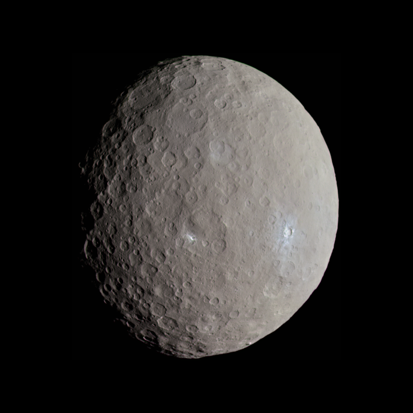
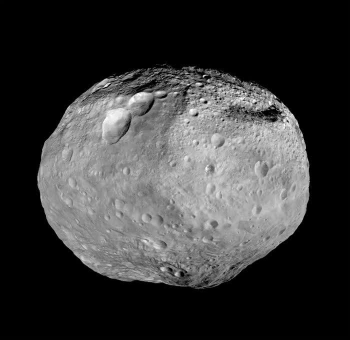
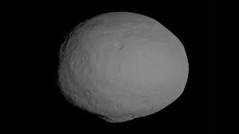
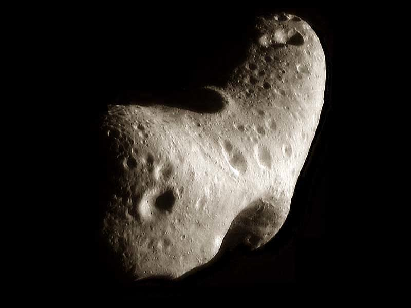
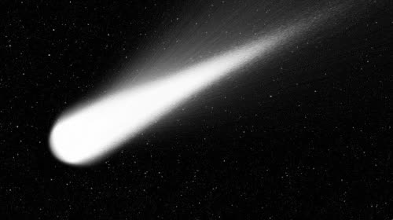
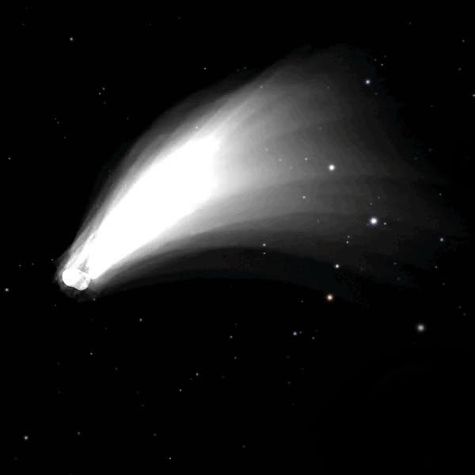
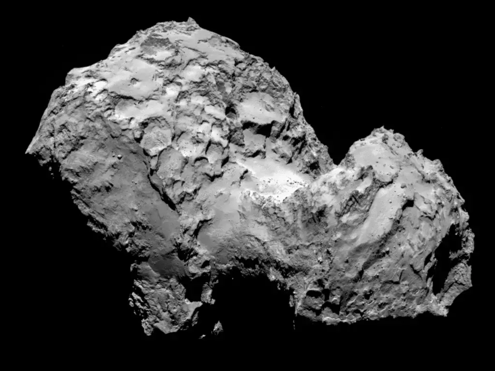
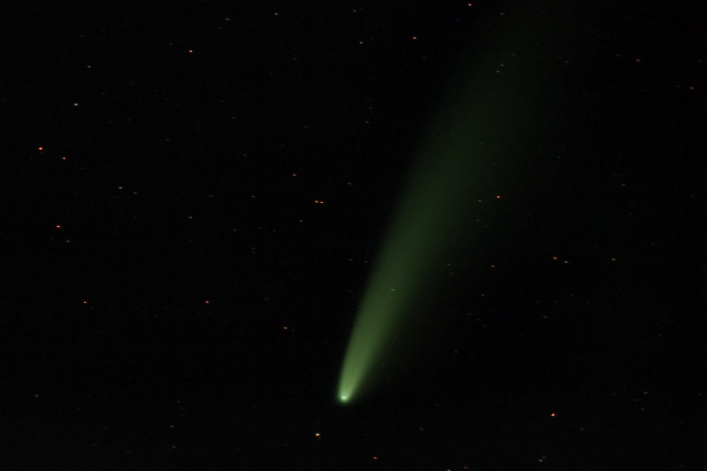

Астероиды и кометы
Астероиды и кометы — это малые тела Солнечной системы, которые несут в себе информацию о её ранней истории. Астероиды в основном состоят из камня и металлов, а кометы — изо льда, пыли и органических веществ. Изучение этих объектов помогает понять процессы формирования планет и происхождение воды и органики на Земле.
Известные астероиды

Церера
Крупнейший астероид и карликовая планета в поясе астероидов.

Веста
Второй по размеру астероид, имеет дифференцированное строение.

Паллада
Третий по массе астероид, орбита сильно наклонена.

Эрос
Один из крупнейших околоземных астероидов, исследован NEAR Shoemaker.
Пояс астероидов — область между орбитами Марса и Юпитера, где сосредоточено большинство астероидов.
Троянцы — астероиды, движущиеся по орбите планеты в точках Лагранжа (например, у Юпитера и Марса).
Околоземные астероиды — пересекают орбиту Земли, потенциально опасны для нашей планеты.
Карликовые планеты — крупные астероиды, обладающие сферической формой (пример: Церера).
Троянцы — астероиды, движущиеся по орбите планеты в точках Лагранжа (например, у Юпитера и Марса).
Околоземные астероиды — пересекают орбиту Земли, потенциально опасны для нашей планеты.
Карликовые планеты — крупные астероиды, обладающие сферической формой (пример: Церера).
Известные кометы

Комета Галлея
Самая известная короткопериодическая комета, видна с Земли каждые 76 лет.

Комета Хейла-Боппа
Одна из самых ярких комет XX века, наблюдалась в 1997 году.

Комета Чурюмова-Герасименко
Известна миссией Rosetta, впервые исследована зондом на орбите.

Комета NEOWISE
Яркая комета, наблюдавшаяся в 2020 году невооружённым глазом.
Короткопериодические кометы — возвращаются к Солнцу за десятки или сотни лет (например, комета Галлея).
Долгопериодические кометы — их орбиты могут занимать тысячи и миллионы лет.
Кометное ядро — твёрдая часть, состоящая из льда и пыли.
Кома — облако газа и пыли вокруг ядра, образуется при приближении к Солнцу.
Хвост — вытягивается от Солнца под действием солнечного ветра, может достигать миллионов километров.
Долгопериодические кометы — их орбиты могут занимать тысячи и миллионы лет.
Кометное ядро — твёрдая часть, состоящая из льда и пыли.
Кома — облако газа и пыли вокруг ядра, образуется при приближении к Солнцу.
Хвост — вытягивается от Солнца под действием солнечного ветра, может достигать миллионов километров.
Строение астероида и кометы
- Ядро астероида — твёрдая каменистая или металлическая часть, может быть пористой или монолитной.
- Ядро кометы — смесь льда, пыли и органики, часто имеет неправильную форму.
- Кома — временная атмосфера кометы, образуется при испарении льда.
- Хвост — состоит из ионов и пыли, всегда направлен от Солнца.
- Реголит — слой пыли и мелких обломков на поверхности астероидов.
Интересные факты
- В поясе астероидов между Марсом и Юпитером — сотни тысяч объектов, но их суммарная масса меньше массы Луны.
- Кометы — "грязные снежки" Солнечной системы, их хвост может быть длиной до 100 млн км.
- Многие миссии NASA и ESA исследовали астероиды и кометы (NEAR, Dawn, Rosetta, OSIRIS-REx, Hayabusa2).
- Падение крупных астероидов могло влиять на эволюцию жизни на Земле, в том числе вызвать вымирание динозавров.
- Некоторые астероиды имеют собственные спутники и даже кольца.
- Кометы могут быть источником органических молекул и воды для молодых планет.